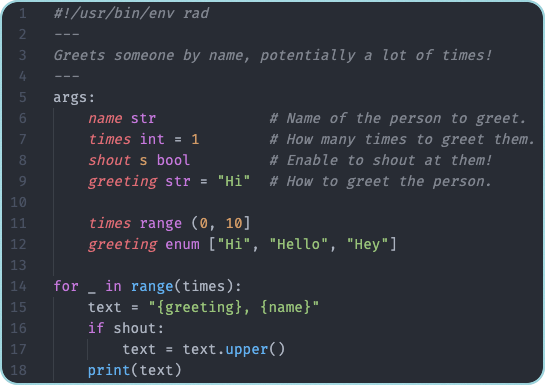

Getting Started
Installation¶
Go (all platforms)¶
go install github.com/amterp/rad@latest
Installs directly from source using the Go (v1.17+) toolchain into your Go bin directory. Make sure that it's on your PATH.
Note: You will need to run go install yourself to upgrade Rad as new versions are released.
For automated updates, use one of the below package managers which support it.
macOS (Homebrew)¶
brew install amterp/rad/rad
From Source¶
See here for instructions on how to build from source.
Checking Installation¶
After you've installed Rad, you can check your installation:
rad -h
If this prints the help string for Rad, you're set!
Your First Rad Script - Hello World¶
Let's write the classic "Hello, World!" program. We'll then modify it to give it a bit of a Rad twist, demoing a couple of features Rad provides.
First, create a file, let's call it simply hello, and give it the following contents:
1 | |
print()
print() is the go-to function for outputting to stdout. It behaves a lot like print() in Python.
You can read more about it in the reference.
File Extension
If you want to give your Rad scripts an extension, you can follow .rad as a convention.
Then, run the script from your CLI by invoking rad on it, and you should see it print out like so:
> rad ./hello
Hello, World!
Nice! Next, let's spruce it up with a few Rad features.
Adding In Some Rad Features¶
One of the selling points of Rad is that it makes defining arguments to your script super simple, using a declarative style.
Let's modify the script to greet a name you input from command line.
1 2 3 4 | |
A couple of things to note here:
- We define an "args block". Right now it contains just the one line, but you can do lots of things in here.
- The modified
print()utilizes string interpolation. String interpolation in Rad behaves a lot like it does in Python (you'll see this is a pattern).
Now, let's try invoking the script again, and this time, input your (or someone's) name:
> rad ./hello Alex
Hello, Alex!
Cool! What happens if we invoke without a name?
> rad ./hello
Usage:
hello <name>
Script args:
--name str
If you run an Rad script without providing any args to a script which expects at least one, Rad will print out the script usage, interpreting your invocation similar to if you had passed --help.
This shows a little of the automatic script usage that Rad generates for you. Let's explore that a bit more.
Improving Script Usage String¶
Rad facilitates writing well-documented and easy-to-use scripts, in part through unique syntax. Let's use a couple of those now.
First, we'll add a file header to your script.
1 2 3 4 5 6 7 | |
File Headers
File headers, as the name suggests, go at the top of Rad scripts (with the exception of shebangs, to be covered later).
They allow you to write a description for your script in between two --- lines. The contents will get printed as part of the script's usage string.
Some ideas on what to cover in your file headers:
- A brief description of what the script does.
- Why you might want to use the script.
- Examples of valid invocations and what they do.
Second, we can add comments to args that a script declares. Let's do that too:
1 2 3 4 5 6 7 | |
Note on # vs. //
Rad uses # to denote arg comments.
# comments are special and do get passed to Rad's parser and can affect script behavior (namely in this case, adding information to the script usage string).
Standard code comments in Rad use //, similar to Java or C/C++, and don't impact script behavior.
You can use code comments on your arg comments, if you so choose e.g.
name str # A name. // todo make this more descriptive
Now, when someone reads the script, it's pretty clear what the script does and what the expected arguments are.
But it gets better! Let's try invoking the script's usage string again (this time let's try using the -h flag explicitly, though it's not necessary):
> rad ./hello -h
Prints a polite greeting using an input name.
Usage:
hello <name>
Script args:
--name str The name of someone to greet.
Not only is the script now easier to maintain for developers, it's also easier for users to understand!
Shebang¶
Needing to manually invoke rad each time you want to run an Rad script can be a little cumbersome. Thankfully, Unix kernels provide a mechanism known as a "shebang".
Let's add one to our script. It has to go on the very first line.
1 2 3 4 5 6 7 8 | |
Then, make the script executable using the following command:
chmod +x ./hello
Now, you can invoke the script directly:
> ./hello Bob
Hello, Bob!
When you invoke an executable script this way, the Kernel scans for a shebang (#!) in the first line.
If it finds a path to an interpreter (in this case, it will find rad, if set up correctly in your PATH),
then it will invoke said interpreter on the script (equivalent to rad ./hello like we were doing before).
rad new
Rad has a command rad new <script> which saves you repeating these steps.
It creates a ready-to-edit executable file with a rad shebang on the top.
Visual Studio Code Extension¶
Rad has a VS Code extension here which offers nice syntax highlighting and script validation.
Installing it is highly recommended!

Summary¶
- We learned how to print, and saw an example of string interpolation.
- We were introduced to the args block
- We saw how we can write self-documenting scripts that also help our users by leveraging file headers and arg comments.
- We saw how we can leverage shebangs to make our scripts more convenient to run.
Note on Rad script content ordering
Rad expects a certain order between shebangs, file headers, arg blocks, and the rest of your code.
It's important to adhere to the following ordering in Rad scripts, or you'll see errors:
1) Shebang (if present)
2) File header (if present)
3) Args block (if present)
4) Rest of the file
Next¶
Great job on getting this far! You've gotten a small peek at what Rad has to offer.
From here, you have a couple of options:
-
Continue your Rad journey: dive into more details with the next section: Basics.
-
If you'd like to see additional unique Rad features, here are some sections you can jump to: